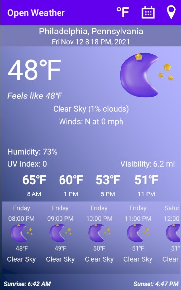

Ibrahim Marou
Projects ▶︎
Apps
Open Weather
Android Studio
Android based weather app using Java that makes API calls, processes JSON data, and formats it into an accessible UI.
Projects
Demand the Data!
Python, R, Pandas, Matplotlib, QGIS

Research project using the data on lead levels in home plumbing in Chicago. Produced 5 maps showcasing a clear correlation between demographics and lead levels across the city. Discovered multiple predictors for lead-exposure risk ranging from income level to number of full-baths in the home Ended project with a call to action for the City of Chicago to respect our FOIA requests and release information on the construction and composition of every service line in the city